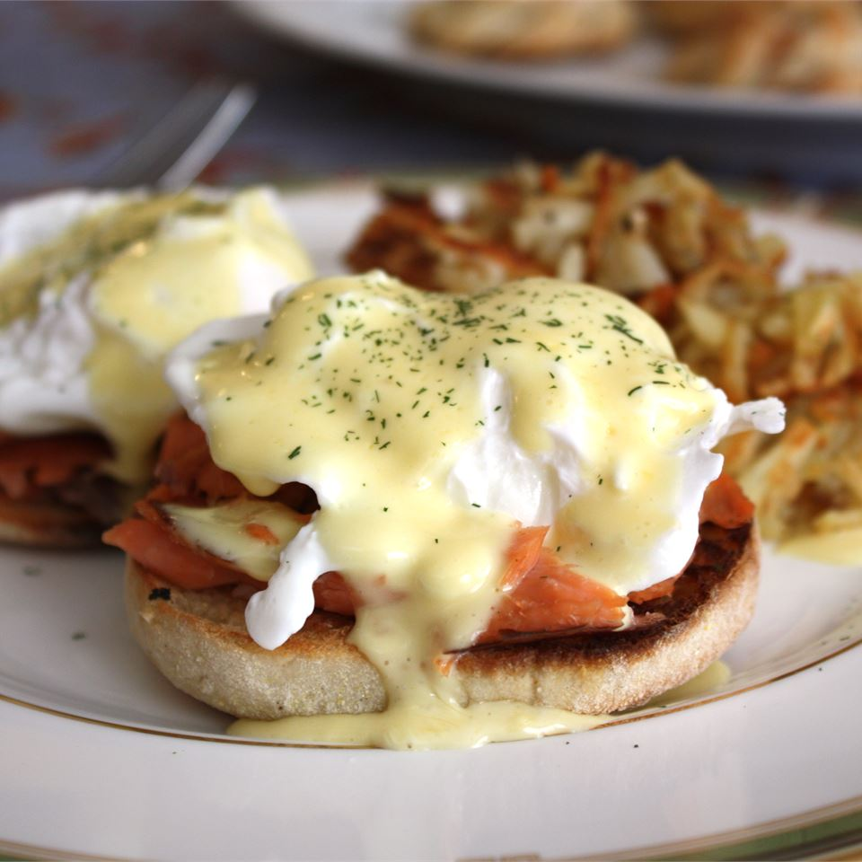

Blender Hollandaise Sauce

Description
The easiest way to get perfect Hollandaise sauce is to use a blender. This recipe has all the same ingredients as the classic, but no double boiler and no chance of the sauce separating. I love the lemony flavor on fresh steamed asparagus!
Ingredients
- 3 egg yolks
- 1/4 teaspoon Dijon mustard
- 1 tablespoon lemon juice
- 1 dash hot pepper sauce (e.g. Tabasco™)
- 1/2 cup butter
Steps
- In the container of a blender, combine the egg yolks, mustard, lemon juice and hot pepper sauce.
- Cover, and blend for about 5 seconds.
- Place the butter in a glass measuring cup.
- Set the blender on high speed, and pour the butter into the egg yolk mixture in a thin stream. It should thicken almost immediately.
- Keep the sauce warm until serving by placing the blender container in a pan of hot tap water.